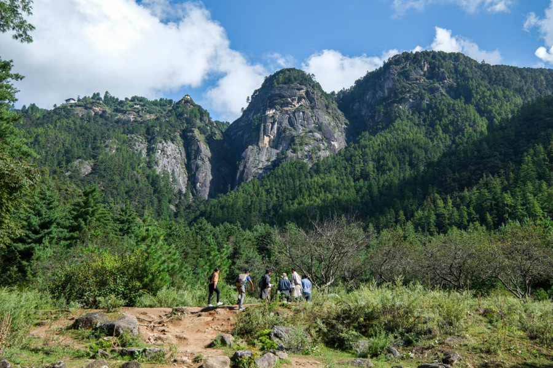

The Tiger’s Nest Monastery is located about 15 kilometers from Paro town and the Paro International Airport in western Bhutan, so it’s relatively accessible. The paved parking lot is only a 30 minute drive from Paro. The road to the trailhead can be a bit narrow and winding at times, but it’s not a steep or dangerous drive at all. Your tour guide in Bhutan can arrange transportation for you to the start of the trail. The monastery itself is located on a steep cliff above the Paro valley, so the only way to get there is by hiking. There’s no cable car, and you can’t drive to the top either. No matter who you are, a hike is required!

The hike to the Tiger’s Nest Monastery starts out in a dense forest of pine trees. You get your first view of the monastery almost right away, although it’s distant and it looks very small at the top of the mountain.
Early on, you’ll pass some little Bhutanese stupas with prayer wheels inside, and a small stream and waterfall. The hiking path can be a bit rocky and muddy in places, and there are occasionally tree roots to step over. Even though the trail starts in the shade, much of it later on will be in the sun.
This is a very famous hike, so the main trail can be busy with people and also horses, which hikers may rent to help carry them partway up the mountain. This means you have to dodge horse poo along the trail.
You should give the horses plenty of space when they pass, because you don’t want to be kicked. Thankfully, the horses have bells, so you can always hear them coming.
A good local tour guide can also show you side routes with more shade and less people. There are lots of lesser used side trails on this hike because of the monastery’s long history as a Buddhist meditation site.
After you’ve hiked approximately halfway to the Tiger’s Nest Monastery, you’ll reach a nice little mountain cafe called the Taktsang Cafeteria. This is a great place to stop and rest, and the cafe has good views of the monastery from below. The monastery still looks far away at this point, and there’s plenty of climbing left to do, but your destination is getting noticeably closer. The monastery is already in range for some good photos if you have a phone or camera lens with a bit of zoom. Meanwhile, you can buy food, drinks, or souvenirs at the cafe, and there are free bathrooms as well. After leaving the cafe, there are several more nice views of the monastery as you keep climbing the trail. Along the way, we saw magpie birds and grey langur monkeys (including babies)! The path gradually becomes a bit less steep as you go, until it finally flattens out when you’re getting close to the monastery.